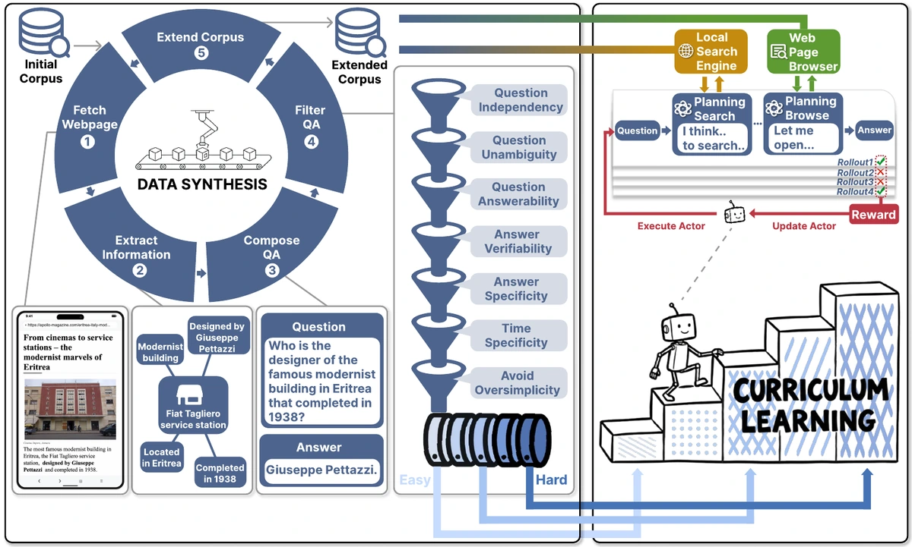
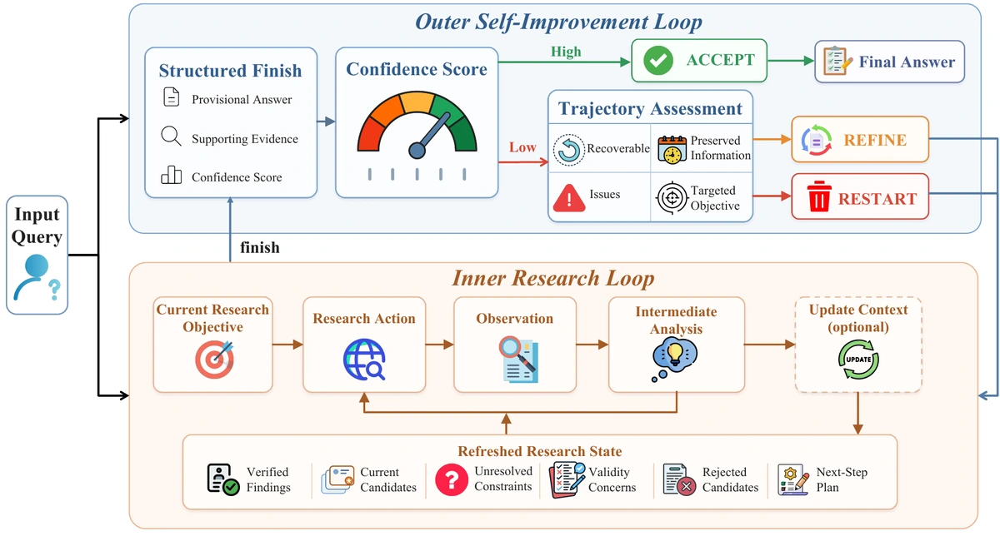
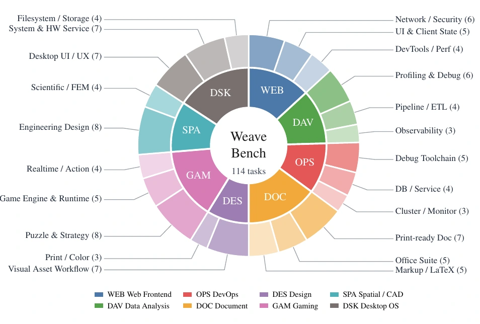
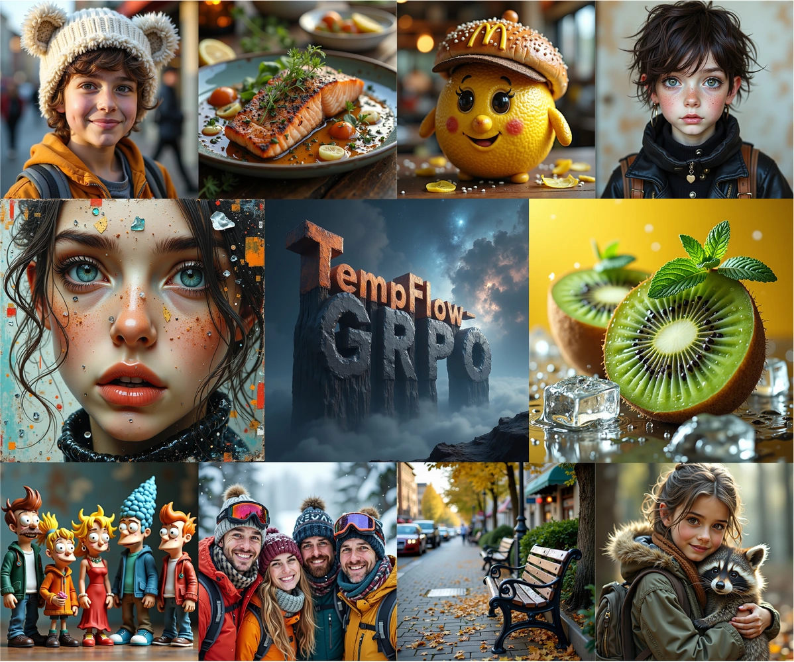
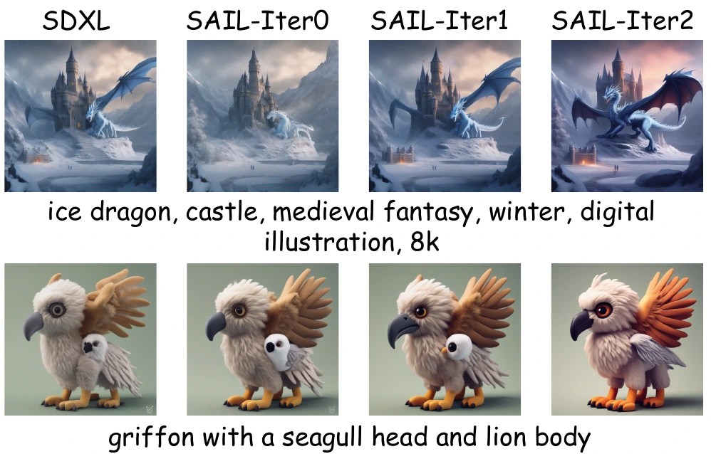

I am a second-year PhD student at the State Key Laboratory of CAD&CG,
 Zhejiang University. I received my B.Eng. in Artificial Intelligence from
Zhejiang University. I received my B.Eng. in Artificial Intelligence from
 Dalian University of Technology in 2025.
Dalian University of Technology in 2025.
I work on agentic foundation models, especially computer-use agent models, with a focus on Agentic RL algorithms and training infrastructure. My goal is to build agents that learn and act reliably in unfamiliar real-world environments. I am also interested in multimodal generation and alignment.
I am currently a research intern with the
Qwen Team at Alibaba, working on computer-use agents.
I previously interned at  Microsoft Research Asia (MSRA).
I'm also a community collaborator at
WebAgentLab,
an open-source community for computer-use agents.
Microsoft Research Asia (MSRA).
I'm also a community collaborator at
WebAgentLab,
an open-source community for computer-use agents.
Open to research collaborations — feel free to get in touch.
News
- 2026.09 Released RecreationWorld for training and evaluating hybrid computer-use agents.
- 2026.08 WeaveBench and ST-Lite accepted by EMNLP 2026.
- LoopX reached #1 on GitHub Trending on August 5.
- 2026.08 Started a research internship with the Qwen Team at Alibaba.
- 2026.07 LiteResearcher accepted by COLM 2026.
- 2026.02 OmniGen2 accepted by CVPR 2026.
- 2026.01 SAIL and TempFlow-GRPO accepted by ICLR 2026.
Earlier milestones
- 2026.03 Started a research internship at Microsoft Research Asia.
- 2025.09 Started my PhD at Zhejiang University.
Research
My work spans three threads.
Agentic Reinforcement Learning
Training agents to reason and act over long horizons with scalable, stable RL.
{kind=link}

LiteResearcher: A Scalable Agentic RL Training Framework for Deep Research Agent
COLM 2026 First author
A scalable Agentic RL framework whose 4B model scores 71.3% on GAIA-Text and 78.0% on Xbench-DS, leading the evaluated open-source models on Xbench-DS.
{kind=link}

AREX: Towards a Recursively Self-Improving Agent for Deep Research
Technical report Contributor
A deep research agent that checks its answers and launches targeted follow-up research, outperforming the evaluated baselines of comparable scale on BrowseComp, WideSearch and HLE.
Generalist Computer-Use Agents
Agents that operate real desktops across GUI, CLI and code — and how we evaluate them.
{kind=link}

WeaveBench: Benchmarking Hybrid-Interface Computer-Use Agents
EMNLP 2026 First author
A long-horizon benchmark of 114 hybrid-interface tasks requiring agents to combine GUI interaction with CLI/code execution; the best evaluated agent achieves a 41.2% success rate.

EMNLP 2026 Co-first author
A training-free KV cache compression method for GUI agents, achieving up to 2.35× decoding speedup at fivefold compression in the reported experiments.

RecreationWorld: Scalable and Verifiable Environments for Hybrid Computer-Use Agents
Technical report Contributor
Software recreation provides scalable training environments with verifiable rewards and a 250-task benchmark across Ubuntu, macOS, Windows, Android and Web.
Multimodal Generation
Unified multimodal models and RL alignment for generation.
{kind=link}
OmniGen2: Towards Instruction-Aligned Multimodal Generation
CVPR 2026 Core contributor 332 Citations · 4.1k GitHub Stars
A unified multimodal generation model; I built the in-context data pipeline and led the progressive Flow-GRPO RL alignment.
{kind=link}

TempFlow-GRPO: When Timing Matters for GRPO in Flow Models
ICLR 2026 Core contributor
A temporally aware RL framework for flow-matching models, using trajectory branching and noise-aware weighting for more stable alignment.
{kind=link}

SAIL: Self-Amplified Iterative Learning for Diffusion Model Alignment with Minimal Human Feedback
ICLR 2026 Core contributor
A self-amplified iterative framework that aligns diffusion models from minimal seed data, letting the model act as its own teacher.
Talks
- Computer-Use Agents: Recent Advances and Future Directions Heart in the Bay · Computer Use Seminar
- 2026.07 WeaveBench: Benchmarking Hybrid-Interface Computer-Use Agents Hunyuan Frontier Lab
- 2026.07 LiteResearcher: Scalable Agentic RL for Deep Research Agents AgenticAICon 2026
Open Source
LoopX
5.7k stars · 511 forksCore Contributor · Long-Horizon Agent Control Plane
 #1 on GitHub Trending · Aug 5, 2026
#1 on GitHub Trending · Aug 5, 2026
An open-source control layer for long-horizon agents, preserving task state and coordinating work across sessions and harnesses such as Codex and Claude Code. It supports recovery, human oversight, and empirical studies of agent behavior and harness design.
Experience
Research Intern · Qwen Foundation Model Team
Hybrid Computer-Use Agents and human–agent collaboration: agents that move fluidly across GUI, CLI and code while staying steerable by a human collaborator.
Advisors: Chang Gao, Que Shen
Research Intern · Shanghai AI/ML Group
Full-stack hybrid-interface Computer-Use Agents: VM sandbox infrastructure, fully asynchronous Agentic RL training, and the WeaveBench benchmark.
Advisors: Caihua Shan, Yifan Yang

Research Intern · Agentic RL Team — First Author / Project Lead
Led LiteResearcher, an open-source 4B deep research model trained with scalable Agentic RL in a simulated search environment.

Research Intern · VectorSpaceLab — Core Contributor
Core contributor to OmniGen2: the in-context data pipeline and progressive Flow-GRPO RL alignment.
Advisors: Zheng Liu, Shitao Xiao
Skills
Education
-
Zhejiang University — PhD in Computer Science, State Key Lab of CAD&CG 2025 – Present
Advised by Prof. Wei Chen -
Dalian University of Technology — B.Eng. in Artificial Intelligence, IIAU Lab 2021 – 2025
Advised by Prof. Huchuan Lu and Prof. Lijun Wang
Honors
- National Silver Award, China International College Students' Innovation Competition (“Internet+”), 2023
- National Scholarship (Top 1%) — Ministry of Education, 2022 & 2024
- Yulan Scholarship (Top 10 university-wide, highest honor) — DUT, 2024
- Outstanding Graduate of Liaoning Province, 2025